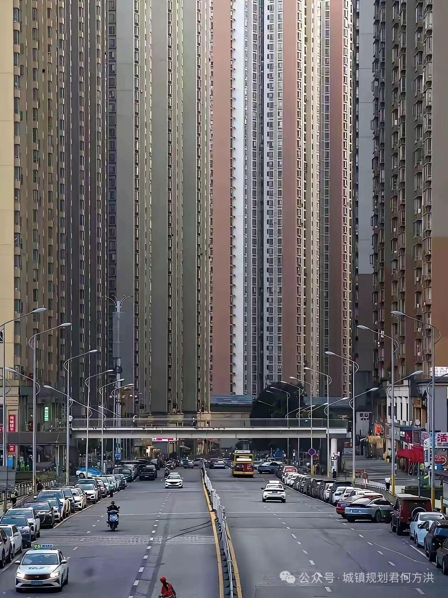

중국 구이저우성

중국 구이저우성
ㄹㅇ..
저런 데에서 살면 존나 답답하겠다
건폐율이 높은가
서울도 저리만들면 될거같은데..
송파에 저런느낌은 아니더라도 아파트벽 느낄 수 있는 곳 있음ㅋㅋ 롯데월드 가는길에
파크하비오 말하는건가?ㅋㅋ
흠 검색해보니 갤러리아 팰리스네. 잠실학원사거리에서 잠실3 삼거리쪽으로 가면ㅋㅋ
그거 욕 존나 쳐먹었지 여전히 쳐먹고있고 아파트 설계 안좋은 사례로 꼽힘 ㅋ
건물 디자인말고... 그냥 차몰고 가다가 눈앞에 아파트 벽 있는거 볼 수 있는 곳 말한거였음
처음 차샀을땐 좀 그랬는데 다니다보니까 적응되는 그 삼각형 도로 말하는듯
너무 닭장처럼 만들어놔서 더 그런 듯..
귀주성
땅도 넓은것들이
택배기사들 뒤지겠는데 ㅋㅋ
무슨소리 좋아죽어 엘베만 있다면 = 현직택배
보기만 해도 정신병 걸릴 것 같네
서울 태생이라 저런 것에 익숙하다고 생각했다가 막상 저런 곳에서 3일 정도 지내보니까 사람이 돌아버릴 것 같더라
급똥 마려우면 어캄?? 내 평생 11층 이상을 살아본 적이 없어서 모르겠네
나 20층 아파트에 사는데 일주일에 1~2번씩은 엘베기다리다가 바지에 똥싸는듯..
그정도면 그냥 기저귀를 차
선생님 닉을 보니 반지하 사셔도 바지에 똥싸실거같음
아...아니 님아;;
쟤네야 그런 걱정을 안 하지
???: 그냥 길거리에서 싸면되고 계단에서 싸면되고 엘베안에서 싸면된다해~
고속 엘리베이터라 괜찮지 않을까
저긴 땅이큰데도 왜저래.. 정신병걸리겠는데
저런거 보면 서울 집값 잡겠다는건 다 쇼하는거 그냥 보여주기식이고 부동산 잡고 있는 기득권층이 집값 떨어지고 개나소나 들어와 살아서 환경 ㅆ나는거 막고 있는 느낌임
여기 중국대륙에서도 변방 중의 변방임
아파트 값 물린 사람 개많고 공실 많음
'부동산 망한 동네'의 전형
근데 저기서 마오타이 만드는거야?
재건축 단지 가보면 저런 느낌이긴함
하늘이 안보임
이거 문정동 가면 비슷한 감성 느껴지던데
사진 잘찍엇다
아파트를 저리 높게 짓는데 주차장을 ㅈ도 안만들어서 주차대란이 일어나는듯
사선배치 좀 막아야 됨. 집 안에서 보는데만 신경써서 ㅈㄴ 외부에서 보면 그냥 장벽이 따로 없음.
이게 32층 수준에서는 하늘이 보이니까 괜찮은데 요즘 짓는 49층 칼질 해놓은데 가버리면 하늘도 안 보이는 완전 장벽임
고층 아파트는 4베이랑 사선배치 불법으로 해야 된다 시바
그래도 마오타이로 많이 벌잖아 한잔해
인구 4천만명... ㅅㅂㅋㅋㅋㅋ
그래픽카드 망가진줄
가로수가 없어서 더 그런듯...?
인천 검단지구가 딱 저느낌임
저러면 정신병원 존나 지어야된다며
언럭키 맨해튼
ㅅㅂ 우울증 걸리겠다
주차난 ㅈ대겠네
도로 ㅈㄴ 막히겠네
수직하중 버티는 게 신기하네 오왕
사진으로 보는건데 어지럽네
송파 파크하비오만 봐도 뭐..
나무가 별로 없어서 그런가 되게 삭막해 보이네